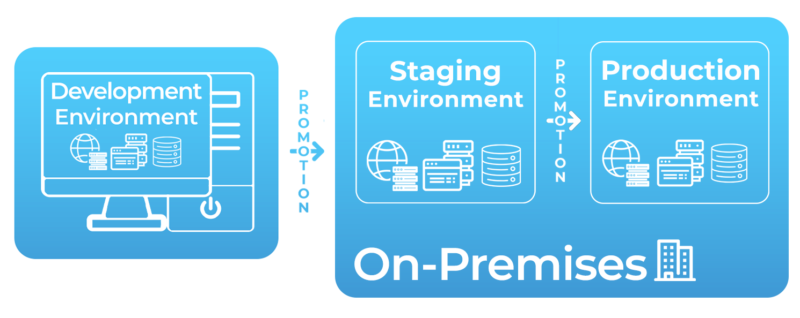
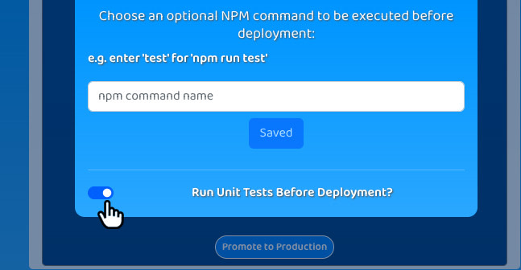

Trellis simplifies automated deployment pipeline setup for teams that wish to focus
on feature development rather than operations.
Case Study
1. Introduction
1.1 Problem Definition
Deployment is the process of moving application code from a developer's machine to infrastructure that serves the application.
Traditionally, software engineers were tasked with developing code, and operations teams were in charge of deploying that
code1.
This separation of responsibilities relied on consistent communication, trust,
and collaboration between development and operations teams to integrate new code despite each team having unique goals,
responsibilities, and even cultures. Any friction between these teams meant additional time taken between software releases
for the development team to make corrective code changes or for the operations team to assess, test, and offer feedback on
problematic features.
To speed up development cycles and make application maintenance easier,
many organizations have adopted the cultural philosophy of DevOps,
under which development and operations are combined into a single team.
DevOps strengthens the bond between development and operations tasks so that code can be incrementally written, tested,
and monitored as it is developed. This enables quicker feedback on iterations which means shorter development cycles
and quicker delivery of features to production. However, not all developers have experience with the steps required to deploy code,
and even fewer have experience with the nuances of deploying to the cloud. Teams whose developers fit this description need a
solution that takes on much of the operations responsibility so they can focus on development while still benefiting from a
culture of DevOps.
As development teams work together to iterate on an application,
an important measure is validating that each individual developer's code changes are acceptable for integration into the application's
main code base. Software development teams are often composed of multiple engineers, so it is beneficial to combine their
contributions into a single functioning and testable artifact that is a candidate for being released to end users.
With an interest in rapid release cycles, DevOps teams turn to automation to accomplish such integration,
and this automated process is known as continuous integration2.
A fundamental step for teams to achieve continuous integration is committing all code changes to a shared repository
in a version control system like GitHub. With all of an application's code being sent to the same place,
development teams can track application revisions, solve code merge conflicts, and run automated processes like testing
or code quality scans every time a change occurs. As such, a version control system is key to continuous integration
as it acts as a single source of versioned code - or a source of truth - to build a comprehensive artifact that can be deployed
as a full application.
However, continuous integration is only part of the story. Once code contributions are compiled into a single artifact,
the functionality of the artifact itself should be tested to ensure that it is ready for end users.
Teams can achieve this by deploying it to infrastructure that runs the application and makes it available for developers to interact
with it. They can then scrutinize its functionality and run various tests to assess its performance3.
As a result, developers can verify application changes across multiple dimensions and develop confidence
that they are ready for production. Continuous delivery is a DevOps practice that automatically deploys all code changes so teams
can carry out these validation steps and effectively prepare a code artifact for a release to production3.
Deployment environments play a key role in this practice.
1.3 Deployment Environments
An early concern for teams when it comes to continuous delivery is to separate the resources which serve the application to
customers and the resources which developers utilize for pre-production testing.
This is to ensure that end users are not exposed to potentially-problematic code that has not been fully vetted.
The discrete sets of resources to which an application is deployed are referred to as environments4.
A common set of deployment environments are development, staging, and production5.
Development environments allow developers to test their potentially-problematic changes by deploying them in isolation.
Introducing this code to real users might expose them to breaking changes or render the application unavailable,
which could have a real monetary cost for organizations that depend on users for profit.
Applications that run in development environments are not exposed to end users and are instead only used by developers
for trying out their new code and making sure that it runs. As such, these environments do not generally need the same
resource capacity as downstream environments where more-intensive verifications take place.
Further, development environments can be updated more rapidly and thus allow for faster iteration for the developers utilizing them6.
Staging environments7 are like development environments in that end users do not interact with them.
However, they tend to be more complex with more-robust resources because they are meant to replicate
the environment that will serve end users. This enables teams to test how the application will behave for end users
and also provides a suitable target for simulating real-world interaction with the application via methods like UI testing,
load testing, integration testing, API reliability testing, etc.
Lastly, production environments contain the infrastructure that serves end users.
Code that runs on this environment has generally been thoroughly vetted enough to be trusted for release.
The resources for this environment must have sufficient capacity to serve the application at scale.
As such, the production environment may contain many servers in order to handle the web traffic,
request processing and storage required by the application.
1.4 Deployment Pipelines
Simply having multiple deployment environments is not enough to ensure that a code artifact is ready for production.
What is needed is a process for moving code artifacts from version control through these environments so that they
can be increasingly vetted and improved as they progress toward production. This process is referred to as a deployment pipeline.
A deployment pipeline's early stages (e.g. development environment) can run automated tests to find most problems yielding early
feedback, while later stages (e.g. staging environment) often provide slower, even manual probing of features.
When an application's developers are satisfied with its performance in one environment,
they can progress it to the next environment in a step called promotion. As code is promoted through a pipeline,
teams can develop confidence in its capacity to adequately serve users.
One option is for teams to manually promote code through a deployment pipeline's environments.
This might entail cloning code from a version control system, injecting environment variables that the application uses,
and entering a series of commands to deploy the code and run relevant tests. While this technique yields the productivity
gains of a deployment pipeline, it is potentially error-prone as it requires that the developer execute the right steps
in the proper order every time. In addition, this manual approach takes up valuable time that could otherwise be spent on
continuously improving the application. A more-effective approach is to automate the operations duties related to deployment
so teams can reap the benefits of a DevOps culture and continuous delivery while still being able to focus their time and
energy on development-related tasks.
Automatic deployments are often initiated in response to changes to the source code in a team's version control system,
such as GitHub. For instance, engineers may develop new application features on the main branch of their GitHub repository
and this branch might have a development environment associated with it. Their deployment pipeline might be configured
so that any commits to the branch will trigger a deployment of the updated code to the corresponding environment.
Other teams may want to retain manual control over promoting code to production environments to make it impossible for sneaky bugs
to reach end users without explicit approval from a human. Nonetheless, even they can benefit from automating the deployment steps
that take place after manual approval.
In an automated deployment pipeline, the bulk of such automation is handled by a build server8.
Its work generally involves:
Obtaining the code to be deployed from source control
Running any commands or scripts to deploy resources
Conducting testing (e.g. unit tests) prior to deployment
Producing deployment logs which indicate deployment status to developers and convey any errors that may have occurred
throughout the process
A common feature of automated deployment pipeline tools is a centralized dashboard which teams can use to interact
with their pipelines. This dashboard can display deployment logs, provide control over the manual steps in the deployment pipeline,
and generally provide transparency into the processes carried out by the build server.
Three major approaches to deployment include on-premise, cloud-hosted, and serverless paradigms.
Deployment pipelines can be implemented differently depending on the infrastructure involved in each approach.
1.5 Approach 1 - Deploying On-Prem
One deployment approach involves deploying an application to on-premises (on-prem) equipment.
‘On-prem' refers to server hardware that is managed and fully-controlled by the developing organization.
Maintaining on-prem infrastructure often requires significant capital expenditures to obtain the hardware necessary
to host the application and keep up application performance.
This includes the time and monetary costs related to all aspects of caring for machines such as replacing parts,
ensuring reliable power delivery, maintaining network connections, physical security, and more.
Deploying a three-tier application on-prem would involve deploying web, application and database servers on the company's
own hardware. An on-prem deployment pipeline tool will deploy code to staging and production environments that exist on
these on-prem machines. Meanwhile, development environments would likely exist on the team's local machines which are capable
of hosting all three application tiers and replicating their performance in production.

1.6 Approach 2 - Deploying a Cloud-Hosted Application
For small teams that lack the time or expertise needed to maintain physical infrastructure,
it makes sense to avoid the responsibilities of on-prem hosting in favor of cloud hosting9.
Cloud hosting refers to deploying an application on machines managed by a third party,
such as Amazon Web Services (AWS). As the cloud provider, AWS would manage the physical servers on behalf of the team
and run the data center locations where these servers are located. The team would only need to deploy their code
to the cloud and rest assured that the underlying hardware will be maintained as needed. While the developers
are still responsible for configuring aspects of their infrastructure like networks, data storage, and scalability,
offloading physical server management lets them place more focus on application development and less on systems administration.
Cloud providers generally employ some form of consumption-based billing, often measured in time and/or compute resources.
Depending on application usage patterns, this can be more expensive than running on-premise hardware,
but it allows teams to serve their users without requiring a large initial up-front infrastructure investment.
In essence, they can run their code on enterprise-level machines without having to buy enterprise-level machines.
The work of a deployment pipeline for a cloud-hosted application is similar to that of on-prem deployments for simple applications.
As long as the development team is willing to generate hardware specifications of the servers for a cloud provider to provision,
the application components - the web server, application server, and database server - can just be moved to the cloud provider's
infrastructure. As a result, the servers hosting the staging and production environments can be similar to those used
in the on-prem deployment approach, and developers can often continue to use local development environments to refine preliminary
code changes.
1.7 Approach 3 - Deploying a Serverless Application
Serverless is a model which can be understood as a subclass of cloud-hosted applications.
Rather than hosting virtualized versions of web, application and database servers,
the cloud providers expose services which abstract away the underlying virtual servers (on top of the physical ones)10.
The canonical example of serverless is functions-as-a-service (FaaS). FaaS functions are individually-defined
units of executable logic, and when invoked the cloud provider runs spins up instances of individual functions on their servers.
These instances are ephemeral, or impermanent, in that they are provisioned, invoked, and then deprovisioned all according to demand.
Serverless resources generally have the following characteristics11:
Auto-scaling - resources will automatically scale in or out depending on demand
High availability - resources are served from redundant physical servers which reside in multiple locations,
limiting downtime in case some fail
Pay-for-use billing - billing is based on consumption, which may include compute time, stored data or data transfer
No infrastructure management
Small teams with limited DevOps experience can benefit from the simplicity of managing serverless applications.
Other applications, especially those with very bursty traffic, can benefit from the auto-scaling and pay-for-use
nature of serverless resources.
However deployment considerations mark a major difference between serverless and non-serverless applications.
Consider converting a three-tier application to a serverless application; what was a single web server may now consist
of an API gateway and a bundle of serverless functions. The application server is also a bundle of serverless functions,
and the HTML it used to serve may be stored in a geographically-distributed object storage service for static assets.
Deploying this application will be very different from deployment in the on-premise and cloud-hosted models.
In those approaches, infrastructure is only defined and provisioned once: when purchasing physical on-prem equipment
or when provisioning long-running cloud resources. But for serverless applications, only the resource definitions are persistent.
These definitions are stored by the cloud provider so that corresponding infrastructure components can be provisioned on demand
and only as needed. Moreover, deployment environments for a serverless application cannot simply be managed as separate sets
of persistent application infrastructure. Consequently, deployment pipelines for a serverless application need to maintain
the logical separation of deployment environments and their unique resources despite them all being ephemeral and distributed
in nature. This can be accomplished by provisioning distinct copies of each serverless resource, effectively deploying a separate,
fully-functioning version of the application for each deployment environment.
Development environments present a larger issue - no longer can a developer simply run a local version of their
application because it is difficult, if not impossible, to recreate the network and compute conditions of an
inherently-distributed serverless application. While local mocking solutions for cloud environments do exist12,
the best way to see how an application performs in a distributed cloud environment is by running it in a distributed
cloud environment13. Thus, running a development environment that more closely matches staging and production improves
the developer experience. Fortunately, the pay-for-use model of serverless also means that these development environments
will not incur costs as high as those of the production environment which is exposed to public traffic, even if it is composed
of the same resources.
1.8 Existing Tools
Unsurprisingly, there are a number of tools designed to offer deployment pipeline solutions,
each with their strengths and weaknesses.
One option is for teams to use open-source tools to develop an automated deployment pipeline in-house.
These DIY solutions can be attractive to those who want a fully-customized pipeline that tightly integrates
with their particular development workflow, but they require a significant time investment to build.
There are free, open-source automation platforms like Jenkins or Red Hat's Ansible which aim to speed up the DIY approach,
but these tools still take considerable time to research and answer questions like “What is the scope of the platform?”
and “Which of its available tools and plugins are relevant to the use case at hand?”
In general, in-house solutions are cheaper and highly-customizable, but are more complex to set up.
This is impractical for smaller teams who don't have the bandwidth to design and manage an entire deployment application
on top of their regular responsibilities.
Another class of options are third-party or SaaS deployment pipelines such as TravisCI or CircleCI.
These pre-configured tools accommodate a wide range of deployment scenarios and preferences by providing
feature-rich platforms for developing, testing, and releasing projects.
However, this comprehensive personalization comes at a price.
Namely, these solutions require paid plans that can be costly.
It can also be difficult to navigate their complex workflows, wide feature sets and available plugins.
There also exist products targeting smaller niches, such as Seed (seed.run).
Seed is a SaaS deployment pipeline designed for serverless applications in particular.
Out of the box, it supports a more-narrow set of development methods than Jenkins, Ansible, CircleCI andTravisCI,
and as a result has a comparatively lower configuration complexity. It is heavily-opinionated in that it only supports
applications built on the Serverless Framework or the Serverless Stack (SST) framework, only accepts code from three
of the most popular version control systems, and only deploys applications to AWS.
While these limitations render Seed unsuitable for many software development workflows,
they enable Seed to abstract away most of the complexity for its target users.
Out of the box, it requires no buildspec files or deployment scripts, enables multiple environments per app,
and provides a simple web-based dashboard for managing and monitoring deployments with just a few clicks.
Seed is a mature tool with many features14. For example, it offers email and webhook deployment notifications,
supports multiple version control systems, and provides metrics for serverless functions and serverless APIs
1516.
But tools like Seed are not without their drawbacks. For example, Seed owns and operates its own pipeline infrastructure completely.
Because of this, users do not have complete control over their build servers or the databases that store sensitive information
such as build metadata, environment variables, and AWS IAM credentials. Further, Seed is not open-source,
meaning there is almost no recourse for users who want to tweak or customize the underlying code.
For instance, there is no way to alter the memory configuration of a build server or specify a particular region
in which a deployment should occur. In essence, when teams use a tool like Seed, they put full trust in its ability
to keep their information secure and predict all user needs in advance. Not all teams will be comfortable providing
this level of trust; some will need a solution that is as opinionated and low-config as Seed, but with a different set
of tradeoffs that give the user full control of the pipeline's infrastructure and the data that it relies on.
We built Trellis to meet this need.
2. Enter Trellis
2.1 What is Trellis?
Trellis is a low-config, continuous delivery deployment pipeline for teams who develop serverless applications on AWS.
It handles the complexity of setting up automated deployment pipelines for its users, making it suitable for teams
who want to spend less time on operations and more time on feature development. As an open-source and self-hosted application,
Trellis users get a low-config deployment pipeline out of the box and still maintain control of their data.
2.2 What Can Trellis Do?
Get Code From GitHub
When users log into Trellis, they can create new applications and specify a GitHub repository that provides each
application's source code. By default, each new application gets three deployment environments - development, staging,
and production - and more can be defined in settings. The development environment is connected to the selected repository's
main branch so that commits to main can be quickly deployed to a cloud environment. Users can configure other git branches
to provide source code to each deployment environment as desired.
Deploy
When code is committed to an application's GitHub repository, Trellis automatically starts deploying the new code
to any environment that is configured to deploy that branch. If users want to deploy a commit that occurred before Trellis
was configured, users can manually deploy the most-recent commit for any branch.
Promote
With the click of a button, Trellis users can promote code to the next environment once its developers are confident
in its performance. Because pushing new versions to production without approval can harm the business by exposing end
users to errors, bugs, or problematic infrastructure changes, Trellis ensures that the production environment is not
configured for automatic deployments. Manual promotion to production is the only way to deploy an application to end users.
Teardown
In some instances, Trellis users might deploy their code, only to decide that it needs to be developed further and should
not proceed through the pipeline. There is no need to leave the application running in such cases,
so Trellis equips each deployment environment with a teardown button for removing all of the cloud resources associated with
a deployed application.
Rollback
Sometimes, problematic code will be deployed to an environment and the development team will want to revert the environment
back to a previously-trusted application version. For instance, if a mis-typed database query breaks an application's
functionality, end users should be insulated from the change and served an older version instead.
Trellis anticipates these scenarios and provides a rollback button for all deployment environments.
Users can click this button and select a previous application version to re-deploy, or “roll back” to.
Test
Unit tests can give confidence that code is behaving as expected.
If the tests are comprehensive and the code is passing the tests, then developers can have confidence that things are
working as expected. In Trellis, users can toggle unit testing for each deployment environment so they can see the output
of the `npm run test` command each time a deployment takes place. If they need to run tests via a different command,
they can configure that too.

2.3 What is Trellis Composed Of?
With its features, Trellis solves the problem of validating code changes and putting them into environments where
they can be promoted through a deployment pipeline to production. Three high-level components work together to fulfill
this responsibility: a build server, a dashboard, and a backend.
The Build Server
Trellis' build server executes deployments to their target environments from an isolated machine and ensures
that unique cloud resources are provisioned for each environment. This build server also performs teardowns
and rollbacks for all deployment environments as requested by users. Executing these jobs on isolated machines
ensures consistent reliability as there is no opportunity for a developer or their local tools and dependencies
to interfere with the process.
The Backend
The backend facilitates communication between the build server and the dashboard.
Its database stores user login information, environment-specific settings, GitHub repository data,
deployment environment status (e.g. deploying, deployed, tearing down), and logged output from the build server.
Its API is responsible for initiating the build server, updating the database, and passing relevant data between
the dashboard and build server so they can carry out their respective duties.
The Dashboard
Trellis' dashboard gives users a way to interact with their deployment pipelines. It displays the state of the
deployment pipelines to users, provides configuration settings for customizing and managing their deployment environments,
and displays controls for managing all of the pipeline's features and triggering any manual steps of their pipelines.
3. Architecture
3.1 Trellis as a Serverless Application
As a deployment pipeline for small teams, Trellis is subjected to bursty traffic as its users are unlikely
to be deploying applications all day long. Therefore, they should not have to pay for long-standing servers
to run Trellis around the clock. Nonetheless, Trellis should still be ready for action at a moment's notice.
Recognizing these needs, we designed Trellis with a serverless architecture that runs on Amazon Web Services (AWS).
Accordingly, Trellis is scalable, can execute concurrent deployments as needed, and will be completely inactive
while its users are not using it. Furthermore, Trellis' target users are teams that deploy serverless applications using AWS,
and they can more-easily adopt and integrate Trellis into their existing workflows because it utilizes the same cloud provider
and cloud-based resources that they already work with. Furthermore, if users find the need to adjust how Trellis is configured
or customize any of its components down the road, they are more capable of doing so if its architecture uses a familiar paradigm.
As mentioned earlier, the resources that constitute serverless applications should be ephemeral,
meaning that after performing their respective tasks, they are deprovisioned entirely.
This requirement has major implications for our architectural decisions when designing Trellis' main components,
which we will outline below.
3.2 Build Server
Deployment pipelines traditionally use a dedicated build server to run the build process and deploy users' applications.
Trellis is serverless and thus does not have a dedicated long-standing build server.
Nonetheless, we will continue to refer to the architecture components responsible for the deployments, teardowns,
and rollbacks as a build server.
Recall that the build server needs to perform various functions, including retrieving code from the source code repository,
running necessary unit tests, and deploying code to a deployment environment.
Trellis' build server is implemented as an AWS Fargate task, which offers on-demand computing via containers.
Containers are stand-alone, executable software packages that include an application
and all the dependencies it needs to run17,
while images are templates that can be used to create containers. Each time it is invoked,
the Fargate task spins up a new container based on an image that is provided by Trellis and stored in the
AWS Elastic Container Registry.
Each container has access to a sandboxed file system that it can use to clone source code from GitHub,
install application dependencies, and execute deployment-related commands. Build server containers are scaled in and out
according to incoming requests - in our case, each deployment to an environment invokes a new Fargate task so that
all deployments remain consistent and each one occurs in a fresh, isolated environment.
Finally, they are deprovisioned once they have completed their work.
Each build server task needs several pieces of data about the deployment to complete its job. Among this data are:
The type of build action (promotion, teardown, rollback)
An identifier of the specific version of code to be cloned from GitHub and deployed to the cloud
The name of the target deployment environment, which is prepended to the names of the resulting AWS resources
to logically associate them with their environment
Metadata about the deployment pipeline, such as the application name, whether unit tests should be run,
and any environment variable the application uses
Trellis' backend is responsible for triggering the build server. This involves gathering deployment data,
initiating a Fargate task, and dynamically injecting the data into the task's corresponding container as environment variables.
For Trellis to deploy AWS resources on behalf of its users, it must have both create and delete permissions
for all services used within their applications. Trellis stores these credentials using AWS Secrets Manager,
which requires that users or resources be given affirmative permission to access secrets.
Each build server container uses the AWS Software Development Kit (SDK) to programmatically access Trellis secrets,
which are stored with the prefix ‘trellis/`. Build server containers only have permission to access secrets with this prefix.
Trellis' build process is built atop an Infrastructure-as-Code (IaC) tool known as the Serverless Stack (SST) framework,
which itself is an abstraction built atop Amazon's Cloud Development Kit(CDK).
IaC tools enable developers to specify resources using a familiar programming language, as opposed to manually
deploying resources individually on the AWS dashboard. When using IaC, the source code itself contains instructions
for what resources to deploy and how they should be connected, leaving less room for human error as resource
definitions can be written once and then shared or reused indefinitely.
Infrastructure as Code
IaC tools typically also offer commands for deploying the application and the cloud resources it relies on.
SST includes such commands, along with several other features like that make it easier to develop serverless applications on AWS.
Trellis deploys SST apps in particular, so it uses SST commands on the build server to deploy the users' applications.
Logs of the entire build server process, including the SST commands, are sent to AWS CloudWatch, Amazon's log storage service,
to be streamed to the user's dashboard.
3.3 Backend
Trellis backend is a collection of serverless functions, an API gateway and a serverless database.
The bulk of Trellis's backend is composed of multiple Lambda Functions. Lambda functions
are individually-defined units of executable logic. When a Lambda is invoked,
the cloud provider runs that function's logic in a container.
The infrastructure that runs each function is provisioned and deprovisioned according to incoming demand,
and AWS scales the number of functions responding to requests to match incoming traffic flow.
The backend is a collection of AWS Lambda functions, an API Gateway and an AWS DynamoDB
There are separate lambda functions for managing each of Trellis responsibilities, including:
Adding new users
Creating new applications
Retrieving an application's environments
Promoting a development environment to production
Authenticating users through GitHub
Retrieving a list of user's repositories, and so on.
Trellis uses AWS API Gateway as the “front door” to its backend. AWS API Gateway is a service that makes
it easy for developers to create and secure APIs18.
An API Gateway can accept incoming HTTP requests and has Lambda functions associated with its URL endpoints.
These Lambdas are invoked to process requests and, if necessary, compose responses.
Among the Lambda functions that the API Gateway invokes is the “automatic deployment” Lambda.
Trellis implements automatic deployments by registering a webhook URL on all GitHub repositories that are connected
to a Trellis application. Webhooks are notifications sent over HTTP, allowing systems like Trellis to respond to
events as they occur instead of querying for changes. The webhook is configured to send a request to the API Gateway
whenever a new commit occurs on a GitHub branch. The API Gateway then invokes the “automatic build”
Lambda which checks if any deployment environment is associated with that branch.
If so, it triggers the build server to start deploying the code for that commit.
To execute automatic deployments along with all other functionalities,
Trellis needs to store data about the deployment pipelines it is managing, including data regarding users,
applications, environments, and deployments. Trellis stores this data in AWS DynamoDB,
a serverless AWS key-value NoSQL database. The information stored in the database includes the user's GitHub token,
an application's repository, a deployment status, and other such metadata.
3.4 Dashboard
We built the Trellis dashboard as a single-page application in React.
This means that all dashboard users get the same copy of the dashboard HTML,
but the data is populated by making calls to Trellis' backend. This allowed us to store the dashboard HTML in an AWS S3 bucket.
S319 is Amazon's object storage service.
Static files, such as our dashboard HTML, can be retrieved directly from an S3 bucket.
Our dashboard is served using AWS CloudFront20, Amazon's content delivery network.
Using S3 and CloudFront in this way allowed us to avoid using a long-running web server to serve the dashboard HTML.
Trellis users utilize the dashboard to trigger any of their pipelines' manual steps, including promotions, rollbacks,
and teardowns. The dashboard also provides a settings page for each deployment environment so that users can provide
environment variables to the build server, specify different AWS credentials for each deployment, toggle unit testing,
and more. Moreover, the dashboard starts a WebSocket connection with the backend's API Gateway to convey the state of
deployments to Trellis users.
The dashboard code is stored in AWS S3 and served via AWS CloudFront
4. Engineering Decisions & Tradeoffs
Now that we understand the architecture of Trellis, this section will discuss some challenges faced
in implementing this architecture.
4.1 Build Server: Lambda vs Fargate
As mentioned above, Trellis does not have a persistent build server waiting around to execute deployments.
Instead, we needed a service that could provision build servers dynamically to execute deployment logic on demand.
We considered two AWS services to fulfill this need: AWS Lambda and AWS Elastic Container Service with Fargate.
Lambda functions have access to an underlying file system, can execute the commands to build and deploy applications,
and also has the auto-scaling characteristics we need for our build server.
With these characteristics, Lambda seemed like a potential fit for handling our build server's duties.
However, Lambdas are limited to 1521 minutes of runtime.
Even deploying a modestly-sized application such as Trellis itself exceeded that time limit;
hence, they are ill-suited for Trellis.
Our solution to avoiding the Lambda timeout limit was to utilize an AWS ECS Fargate task instead.
Like Lambda, Fargate offers an on-demand compute engine for executing logic.
Logic must be containerized by developers before it can run on Fargate,
making Fargate slightly more-complicated than Lambda in terms of setup22.
But this is a justifiable tradeoff considering that Fargate tasks are not subject to timeouts.
While the start-up times of ECS Fargate tasks is significantly greater than Lambdas (around a minute for
ECS Fargate tasks and under a second for Lambdas), the relatively long duration of the build process makes
this a negligible tradeoff. Otherwise, an ECS Fargate task is well-suited for executing builds and deployments -
we can spin up a task only when needed, and a containerized build server will be spun up to handle the deployment at hand.
Furthermore, the auto-scaling nature of ECS means that Trellis can handle concurrent deployments out of the box.
4.2 Sending real-time data to the dashboard
In addition to providing a way to trigger deployments manually, the Trellis dashboard provides
users with information about the state of their deployment pipelines, including logs of the deployment process.
We recognized that this information should be as recent as possible so users can stay up-to-date on the progress
and status of their deployments. However, given that Trellis is composed of multiple ephemeral components,
sending deployment information to users in real time required efforts to facilitate real-time communication
between these components. To stream logs to the user in Trellis architecture, we needed to both retrieve the
deployment state as it changes and then send the updated state to the user in real-time.
Flow of a deployment request in Trellis
Retrieving deployment state from the build server
In the initial prototype of Trellis, the build server sent deployment state updates to the database in batches,
only dispatching new logs after executing each command in the build process.
The deployment command provided by SST compiles the application code down to resource templates.
These templates are sent to AWS CloudFormation,
which uses them to provision the resources defined in them23.
Provisioning the resources with a single SST command may take over 20 minutes24.
Consequently, waiting to log the output of the deployment command meant that the user could wait a long time
before finding out whether their deployment occurred as expected. In other words,
the logs and deployment status as shown on the dashboard did not necessarily reflect the current state of the deployment.
Sending deployment logs in batches
To address this issue, we could have retrieved the state of resource deployments directly from CloudFormation.
The CloudFormation console can be configured to send notifications whenever there is a change to the state
of a particular resource in the cloud. As such, we considered sending deployment updates to the front-end after each
of these notifications. However, CloudFormation only provides information on AWS infrastructure changes,
which is just a partial picture of the Trellis deployment process. As mentioned earlier,
the build server performs other tasks before issuing the SST deployment command; we wanted users
to access the status and outputs of those commands as well. Doing so would ensure that the user
has visibility of the entire deployment process, not just the resources being provisioned in AWS.
For instance, they would know if the deployment process is disrupted by any errors thrown while commands
are executed on the build server.
While the build server is executing the deployment command, it makes frequent calls to CloudFormation
to get resource deployment state and logs this information. The build server also creates logs related
to the other build process commands, such as cloning the GitHub repository or installing the application dependencies.
By capturing the build server's logs, we can gain a comprehensive real-time picture of the deployment status.
We used AWS CloudWatch to achieve this result. CloudWatch enables the connection of a specific AWS resource to a log group,
which is composed of separate log streams connected to a particular instance of that resource.
The logs of each ECS Fargate task are written to its connected log stream as they occur.
Whenever there is an update within a log group, Cloudwatch publishes a log event that other AWS resources
can subscribe and react to. A Lambda function is configured to respond to events from this log group.
When this Lambda is triggered, it writes the logs to the database, enabling Trellis to send them to the client as they occur.
Streaming deployment logs
Sending Deployment State
Now that we have near real time logs in the backend, Trellis must pass this information to users of the dashboard.
We considered achieving this via either client-side polling or WebSockets.
In client-side polling, the client repeatedly queries the (backend/server) for data,
often at regular intervals of a few seconds. Client-side polling is straightforward to implement,
as it only requires that the client be configured to send HTTP requests at a regular interval.
However, consistently polling for data can generate unnecessary HTTP requests,
and the polling interval can introduce a delay between updates on the backend and the front-end.
WebSockets, on the other hand, allow for bidirectional communication between a client and a server.
Rather than the client needing to send repeated requests to the server,
a persistent connection between client and server is maintained so that the server can send the data
to the client as soon as it is available. In the case of Trellis,
we utilized the AWS WebSocket API which relies on an API gateway to persist open connections
between clients and the backend AWS services.
When the build server sends logs to a CloudWatch log group,
the Lambda function that is subscribed to that log group sends data through this WebSocket connection
to the client, providing real-time updates to the client regarding the state of their deployments.
Logs are sent through several AWS resources before being sent to the client over the open WebSocket connection
5. Future Work
Trellis is a fully-functioning low-config, self-hosted, and team-oriented automated deployment pipeline.
Nevertheless, there is always room for software to improve.
Below are some features we would like to implement in later iterations of Trellis.
Implement user roles with customizable permissions for each role
Optimize deployment times
Cache dependencies (e.g., Node Modules) in a shared file system to avoid re-downloading for every deployment
Store build artifacts, so rollbacks don't require rebuilding an older application version
Offer a simple CLI for developers to manage and monitor deployments from a local console
Allow users to connect Trellis to their Continuous Integration service in cases where their
serverless application is one part of a larger application with non-serverless components